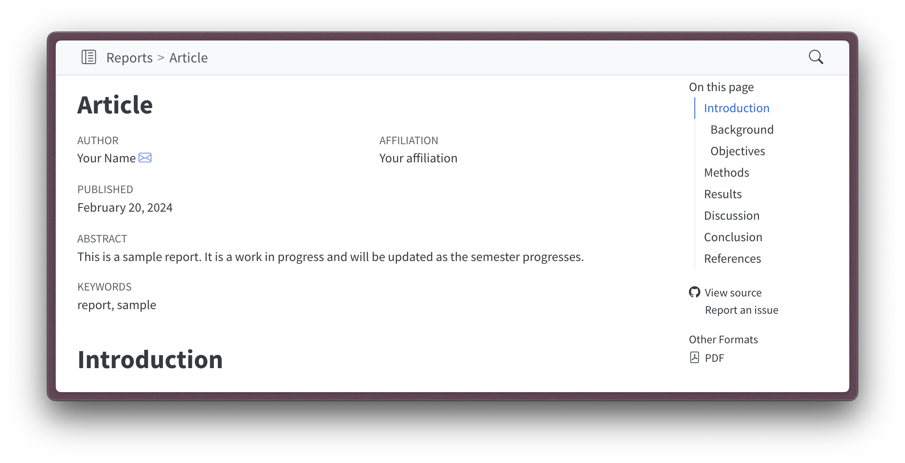
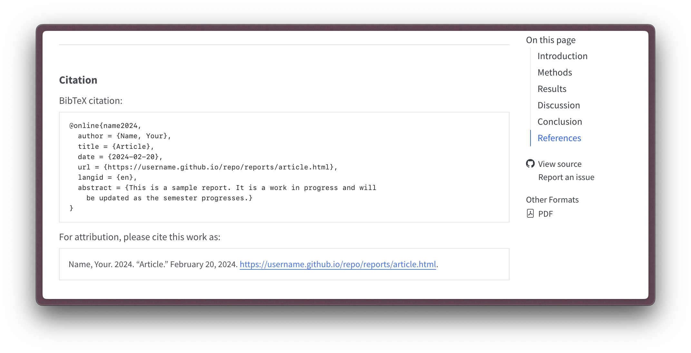

11. Sharing research
Communicating research findings
In this recipe, I cover the tools and strategies for sharing research findings with the public and peers. We will begin assuming we are using Quarto websites as the primary tool for sharing research findings in both forums. From there, we will enter into some of the details of articles, presentations, and publishing research code and data.
Concepts and strategies
Public-facing communication
R research projects that take advantage of Quarto websites have access to a wide range of tools for sharing research. First, the entire research tool chain can be published as a website, which is a great way to share the research process in an easily perusable format. Second, the website can be used to share the research findings in particular formats including articles and presentations. Let’s focus in on these later formats and discuss strategies for setting up and formatting research articles and presentations.
We will assume the project directory structure in Snippet 1.
project/
├── data/
│ ├── analysis/
│ ├── derived/
│ └── original/
├── process/
│ ├── 1_acquire.qmd
│ ├── 2_curate.qmd
│ ├── 3_transform.qmd
│ └── 4_analyze.qmd
├── reports/
│ ├── figures/
│ ├── slides/
│ │ ├── workshop/
│ │ │ └── index.qmd
│ │ └── conference/
│ ├── tables/
│ ├── article.qmd
│ ├── citation-style.csl
│ ├── presentations.qmd
│ └── bibliography.bib
├── _quarto.yml
├── index.qmd
└── README.md- 1
- Project root: The root directory for the project.
- 2
- Data directory: The directory for storing data files.
- 3
- Process directory: The directory for storing process files.
- 4
- Reports directory: The directory for storing reports.
- 5
- Figures directory: The directory for storing figures.
- 6
- Slides directory: The directory for storing presentations.
- 7
- Workshop directory: The directory for storing a “workshop” presentation.
- 8
- Workshop presentation file: The file for the “workshop” presentation.
- 9
- Tables directory: The directory for storing tables.
- 10
- Article file: The file for the article.
- 11
- Citation style file: The file for the citation style.
- 12
- Presentations listing file: The file for the presentations listing.
- 13
- References file: The file for the references.
- 14
- Quarto configuration file: The file for the Quarto configuration.
I will also assume the following Quarto configuration file _quarto.yml in Snippet 2.
# _quarto.yml
project:
title: "Web project"
type: website
execute-dir: project
render:
- index.qmd
- process/1_acquire.qmd
- process/2_curate.qmd
- process/3_transform.qmd
- process/4_analyze.qmd
- reports/
website:
sidebar:
style: "docked"
contents:
- index.qmd
- section: "Process"
contents: process/*
- section: "Reports"
contents: reports/*
format:
html:
theme: cosmo
toc: true
execute:
freeze: auto- 1
- Execution directory: The root directory for all execution.
- 2
- Render order: The order in which files are rendered.
- 3
- Sidebar style: The style of the sidebar.
- 4
- Sidebar contents: The contents of the sidebar.
- 5
- Process contents: The contents of the process section.
- 6
- Reports contents: The contents of the reports section.
- 7
- Freeze option: The option for rendering only changed files.
Looking more closely at the directory structure in Snippet 1, let’s focus on the aspects that are shared between articles and presentations. You will notice that the reports/ directory contains a figures/ directory for saving figures, a tables/ directory for saving tables, and a references.bib file for saving references. These are shared resources that can be used in both articles and presentations. In the process directory, you can save tables, figures, and other resources that are generated during the research process that you believe will be useful in commmunicating the research findings. Then, when you create your presentations, you can include the same materials in either format with the same files. If changes are made to the figures or tables, they will be updated in both the article and the presentation(s).
Next, it is worth pointing out some important features that appear in the Snippet 2 configuration file. The execute-dir specifies the root directory for all execution. That is the path to directories and files will be the same no matter from what file the code is executed. The render option specifies the order in which the files are rendered. This is important for ensuring that the research process is executed in the correct order. The files that are executed and rendered for display appear in the website and the style and contents options specify the style and contents of the sidebar, respectively. Another key option is the freeze option under execute. This option specifies that only changed files will be rendered. This helps avoid re-rendering files that have not changed, which can be time-consuming and computationally expensive.
Articles
In the reports/ directory a file named article.qmd appears. This file, which can be named anything, will be the document in which we will draft the research article. This file is a standard Quarto document. However, we can take advantage of some options that we have not seen so far that adds functionality to the document.
In Snippet 3, we see an example of the YAML frontmatter for a Quarto article.
# reports/article.qmd
title: "Article"
date: 2024-02-20
author:
- name: "Your name"
email: youremail@school.edu
affiliation: "Your affiliation"
abstract: |
This is a sample article. It is a work in progress and will be updated as the research progresses.
keywords:
- article
- example
csl: citation-style.csl
bibliography: ../bibliography.bib
citation: true
format:
html: default
pdf:
number-sections: true- 1
- Author information: The author information for the article.
- 2
- Abstract: The abstract for the article.
- 3
- Keywords: The keywords for the article.
- 4
- Citation style: The citation style for the article.
- 5
- Bibliography: The bibliography for the article.
- 6
- Citation: The citation for the article itself.
- 7
- Format: The format for the article.
- 8
- HTML format: The HTML format for the article (for web presentation)
- 9
- PDF format: The PDF format for the article (for printing)
In addition to typical YAML frontmatter, we see a number of new items. Looking at the first three, we see that we can add author information, an abstract, and keywords. These are standard for articles and are used to provide information about the article to readers.
When rendered, the article header information will now contain this new information, as seen in Figure 1.

The next two items are the citation style and bibliography. These are used to create and format citations in the article. The citation style is a CSL file that specifies the citation style. You can find a database of various citation styles at the Zotero Style Repository. You can search for a style or by field. Once you find a style you like, you can download the CSL file and add it to your project. The bibliography is a BibTeX file that contains the references for the article. You can create this file (as mentioned before) in a reference manager like Zotero or Mendeley.
Now the citation option is not for references that we have gathered. Rather, it is for generating a citation for the current article. This is useful if someone else would like to cite your article. When the article is rendered, the citation will appear at the bottom of the article, as seen in Figure 2.

There are two other features to mention. One is the format option. Since the article is a Quarto document, it can be rendered in multiple formats. The html option ensures that our article is rendered in HTML format as part of the website. However, in addition, we can add a pdf option that will render the article in PDF format. Note that in Figure 1, the pdf option has created an “Other formats” listing on the right side below the table of contents. Clicking this will open the PDF version of the article.
Although not employed in this example, it is also possible to use more extensive format changes with Quarto extensions. Currently, there are various extensions for different journals and publishing houses. For more information and examples, consult the documentation above.
Presentations
In the reports/ directory we can also include presentations and associated slide decks. A popular web-based presentation framework is reveal.js. This framework is used in Quarto to create presentations. In Snippet 1, the slides/ directory contains a directory for each presentation and an index.qmd file within. The index.qmd file contains the presentation content, which we will see soon. To provide a listings page each presentation, the presentations.qmd file contains special YAML instructions to be a listings page.
Let’s first dive into the index.qmd file for a presentation and discuss some of the key features. In Snippet 4, we see a basic example of a Quarto presentation.
title: "Examle presentation"
date: 2024-02-20
author: "Jerid Francom"
format: revealjsThe YAML frontmatter for a Quarto presentation is similar to that of most Quarto documents. The title, date, and author are all included. The format option specifies that the presentation will be rendered in reveal.js format. When rendered, the presentation the slide deck will be interactive and can be navigated by the user. The slide deck will also be responsive and can be viewed on any device.
In Figure 3, we see an example of a Quarto presentation rendered in reveal.js format. I will discuss some of the key features of the presentation, in the presentation itself.
Peer-facing communication
For those who are interested in interacting with your work, it is key to prepare materials that can be reliably shared. This includes the research compendium, of course, but also the computational environment in which the research was conducted so that the research can be reproduced.
In the next section, we will discuss some of the strategies for sharing a reproducible computational environment. This will include version control with Git, pinned package versions with {renv}, containerization with Docker, and automation with GitHub Actions.
Tools and strategies
As seen in Figure 4, the computational environment for a research project includes various components. Let’s start with the inner components are work our way out.
Version control
As has been stressed throughout this text, version control is a key part of reproducible research. It allows you to track changes to your research compendium. This is important for ensuring that the research record is transparent.
One of the most popular version control systems is Git. If you have interacted with the supplementary materials provided with this text (lessons, recipes, and labs), you are now familiar with working with Git (and GitHub) in day-to-day tasks. These tasks include:
- Cloning a repository
- Making changes to a repository
- Committing changes to a repository
- Pushing changes to a repository
- Pulling changes from a repository
- Forking a repository
These tasks are essential for collaborating with others on research projects and contributing to open source projects. However, there are a few other tasks which will prove useful if you continue on in your reproducible research journey. In Git, these include:
- Branching
This allows you to work on different versions of your research project at the same time. For example, you could have amainbranch for the current version of your research project and adevelopbranch for the next version of your research project. - Merging
This allows you to combine changes from one branch into another branch. For example, you could merge changes from thedevelopbranch into themainbranch once they are complete. - Pull requests
This allows you to propose changes to a repository and discuss them with others before merging them. For example, you could create a pull request to propose changes to themainbranch from thedevelopbranch.
We will not cover these in detail here, but it is good to be aware of them if you plan on collaborating on git-maintained projects. For more information, see the GitHub documentation.
Pinned package versions
Moving out a level, we have the software layer. This includes the R packages that you use in your project, the version of R that you use, and the system dependencies that are required. Sharing your research project code does not guarantee that others will be able to reproduce it –R packages versions are constantly being updated and this can lead to ‘breaking changes’ that render your code inoperable. R itself changes over time, although less frequent when compared to packages.
To ensure that your research is reproducible, it is important to share the software layer as well. This can be done with the {renv} package. {renv} allows you to create a snapshot of the version of R and the R packages that you use in your research project. This snapshot can then be shared with others, ensuring that they have the same R and R package versions that you use.
To set up an R project with {renv}, you need to initialize the project. In the R console, run renv::init(). Let’s assume we start with the project structure in Snippet 1, after initializing {renv}, a renv/ directory and a renv.lock file are added, as seen in Snippet 5.
project/
├── data/
├── process/
├── reports/
├── renv/
│ ├── activate.R
│ ├── library/
│ └── settings.json
├── _quarto.yml
├── index.qmd
├── README.md
└── renv.lock- 1
- renv directory: The directory for the {renv} package
- 2
- activate.R file: The file for the {renv} activation script
- 3
- library directory: The directory for the {renv} library
- 4
- settings.json file: The file for the {renv} settings
- 5
- renv.lock file: The file for the {renv} lock file
On initialization, {renv} will create a renv.lock file that contains a registry of the versions of the R packages that you are using. This file can be shared with others, ensuring that they install the same versions of the R packages that you used in your research project.
The renv/ directory contains a activate.R file is a script that activates the {renv} package when you open the project in RStudio, a library/ directory contains a local library, that is, the R packages that you are using in your research project, and finally a settings.json file contains the settings for the {renv} package.
Behind the scenes, {renv} also adds a .gitignore file within the renv/ directory which ensures you do not accidentally commit the R packages to your repository (found in the renv/library/ directory). This is important because the R packages can be large and take up a lot of space in your repository. Furthermore, the renv.lock file alone can be used to restore the R packages with the correct versions by running renv::restore() function.
Containerization
Now, we are nearing the outer layer of the computational environment. But before we get there, we need to discuss containerization, a strategy that will help us share operating system and system software dependencies that we did not address with {renv}, straddling two layers of the computational environment illustrated in Figure 4.
Containerization allows you to create a self-contained environment for your research project that can be shared with others. This effectively means that you and your collaborators can use the same operating system and system dependencies. The container runs an operating system which is isolated from the host operating system. This has two main benefits: one, users do not need to change their host systems to run your project and two, the operating system and system dependencies are the same for everyone, ensuring that the research is reproducible.
One popular containerization tool is Docker. Docker allows you to create a Docker image that contains the operating system and system dependencies (as well as your research compendium!) for your research project based on a blueprint file called a Dockerfile. A Dockerfile is a text file that contains the instructions to create the Docker image.
For example, we can create a very simple Dockerfile that will generate an image with R installed, as seen in Snippet 6.
# Dockerfile
# Base image with R
FROM rocker/r-ver:4.1.1- 1
- Base image: The base image for the Dockerfile
In this Dockerfile, we use the rocker/r-ver:4.1.1 image as the base image. That is to say that Dockerfiles can import and extend other images that have been built from other Dockerfiles. The Rocker Project creates and maintains a number of very useful images for R users to use and extend. In this case, we are using the r-ver image which contains R version 4.1.1. There are r-ver for many other R versions, even one for the latest R version, whatever that may be.
Another thing to note about images from the Rocker Project (and many other Docker images) is that the operating system will a version of Linux. Linux is a popular choice for Docker images because it is lightweight, can be easily extended, and is freely available and open sources. This means that the images can be shared without licensing issues.
An OS is not the only aspect that a Dockerfile can address that will help us to create a publishable reproducible research project. In addition, we can add system dependencies, modify the system in various ways, add files to the image, and set up the environment for running the project.
Let’s look at a more realistic Dockerfile example. If we assume the project structure in Snippet 1, we can add a Dockerfile to the project as seen in Snippet 7.
# Dockerfile
# Base image with R
FROM rocker/r-ver:4.1.1
ENV DEFAULT_USER="ruser"
# User rocker scripts to set up
# pandoc, quarto, and default user
RUN /rocker_scripts/install_pandoc.sh
RUN /rocker_scripts/install_quarto.sh
RUN /rocker_scripts/default_user.sh $DEFAULT_USER
RUN usermod -aG sudo ${DEFAULT_USER} && \
echo '%sudo ALL=(ALL) NOPASSWD:ALL' >> /etc/sudoers
USER $DEFAULT_USER
# Copy project file
COPY . /home/ruser/project
# Set working directory
WORKDIR /home/ruser/project
RUN R -q -e "install.packages(c('pak', 'renv'), repos = c('https://cloud.r-project.org/', 'https://r-lib.r-universe.dev'));"
# Set bash entrypoint
ENTRYPOINT ["/bin/bash"]- 1
- Base image: The base image for the Dockerfile
- 2
- Default user: The default user for the container
- 3
- Install pandoc: Install pandoc in the container (from rocker_scripts)
- 4
- Install quarto: Install quarto in the container (from rocker_scripts)
- 5
- Default user script: Set the default user in the container (from rocker_scripts)
- 6
- Add user to sudo: Add the default user to the sudo group (for root access)
- 7
- User: Set the default user for the container
- 8
- Copy project: Copy the project files to the container
- 9
- Working directory: Set the working directory for the container
- 10
-
Install packages: Install the
pakandrenvpackages in the container - 11
- Entrypoint: Set the entrypoint for the container (bash shell)
Now there is a lot going on here. Let’s break down the key parts of this Dockerfile and understand why each part matters:
Base Image Selection: We use the Rocker Project
r-verimage which provides R version 4.1.1. This ensures everyone starts with exactly the same R version.User Setup:
- We create a default user
ruserrather than running as root (a security best practice) - The user gets sudo access which helps if we need to install additional system packages later
- We create a default user
Essential Tools:
- Pandoc is needed for document conversion in Quarto
- Quarto is our publishing system
- These are installed via Rocker’s convenience scripts which handle dependencies
Project Setup:
- The entire project gets copied into the container at
/home/ruser/project - We set this as our working directory so commands run in the right place
- The
pakandrenvpackages are installed to handle R package management
- The entire project gets copied into the container at
Runtime Configuration:
- The bash entrypoint gives us an interactive shell when we run the container
- This makes it easier to troubleshoot or run additional commands
This setup creates a complete, isolated environment that contains everything needed to run our project reliably.
Automation
The final part of the process is to automate the building and sharing of your research environment. This automation serves several purposes:
- Ensures consistent builds of your Docker images
- Makes your research environment available on different hardware architectures
- Automates testing and validation of your environment
- Simplifies sharing with the research community
This automation can be accomplished with GitHub Actions, a continuous integration and continuous deployment (CI/CD) tool that allows you to automate tasks in your GitHub repository. Let’s walk through setting up automated Docker image builds.
First, you’ll need to set up a few prerequisites:
- A Docker Hub account (https://hub.docker.com)
- A Docker Hub access token (https://hub.docker.com/settings/security)
- GitHub repository secrets for Docker Hub credentials
To add your Docker Hub credentials to GitHub:
- Go to your GitHub repository
- Click on “Settings” > “Secrets and variables” > “Actions”
- Add two new repository secrets:
DOCKER_HUB_USERNAME: Your Docker Hub usernameDOCKER_HUB_ACCESS_TOKEN: Your Docker Hub access token
Next, create a GitHub workflow file. You’ll need to create a .github/workflows/ directory in your repository and add a YAML file. For example, create build-and-push.yml with the following content:
# .github/workflows/build-and-push.yml
name: Docker Build and Push to Docker Hub
on:
push:
branches: [main]
jobs:
build-and-push:
runs-on: ubuntu-latest
steps:
- name: Checkout
uses: actions/checkout@v4
- name: Set up QEMU for multi-architecture builds
uses: docker/setup-qemu-action@v3
- name: Set up Docker Buildx
uses: docker/setup-buildx-action@v3
- name: Docker Login
uses: docker/login-action@v3.0.0
with:
username: ${{ secrets.DOCKER_HUB_USERNAME }}
password: ${{ secrets.DOCKER_HUB_ACCESS_TOKEN }}
- name: Build and push Docker images
uses: docker/build-push-action@v5
with:
context: .
push: true
tags: ${{ secrets.DOCKER_HUB_USERNAME }}/my-image:latest
platforms: linux/amd64,linux/arm64- 1
- Trigger: When to run the workflow
- 2
- Checkout: Checks out the repository code
- 3
- QEMU: Sets up QEMU for multi-architecture builds
- 4
- Docker Buildx: Configures Docker Buildx for the build process
- 5
- Authentication: Logs into Docker Hub using the stored credentials
- 6
- Build & Push: Builds the Docker image using the repository’s Dockerfile, creates images for both AMD64 and ARM64 architectures, and pushes the images to Docker Hub
Let’s break down what this workflow does:
- Trigger: The workflow runs when changes are pushed to the
mainbranch - Setup:
- Checks out the repository code
- Sets up QEMU for multi-architecture builds (x86 and ARM, i.e. Apple Silicon)
- Configures Docker Buildx for the build process
- Authentication: Logs into Docker Hub using the stored credentials
- Build & Push:
- Builds the Docker image using the repository’s Dockerfile
- Creates images for both AMD64 and ARM64 architectures
- Pushes the images to Docker Hub
Once this workflow is in place, every push to the main branch will:
- Trigger an automated build
- Create Docker images for multiple architectures
- Push these images to Docker Hub
You can monitor the progress of your builds in the “Actions” tab of your GitHub repository. Each workflow run will show detailed logs of the build process, making it easy to troubleshoot any issues that arise.
This GitHub workflow requires that we have a GitHub repository with a Dockerfile in the root directory. There are bound to be files or directories inside our project that will will not want to add to the Docker image. For this case, we have the .dockerignore file, as seen in Snippet 9. This is much like the .gitignore file but instead of telling Git not to track certain files and directories, this file pertains to Docker image builds. In many cases, however, both files will contain the same files and directories to ignore.
project/
├── data/
├── process/
├── reports/
├── renv/
├── _quarto.yml
├── Dockerfile
├── .dockerignore
├── .gitignore
├── index.qmd
├── README.md
└── renv.lock- 1
- Dockerfile: The Dockerfile for the project
- 2
- .dockerignore: Files to ignore when building the Docker image
Round trip
Here’s an overview of the steps involved in preparing and restoring the computational environment for a research project:
Preparing the computational environment
- Create/develop project with version control (Git/GitHub)
- Organize files in a clear structure (data, process, reports)
- Track changes with meaningful commit messages
- Push to GitHub repository for sharing
- Set up reproducible environment
- Initialize {renv} to track R package versions
- Create Dockerfile to capture system dependencies
- Add GitHub Actions workflow for automated builds
- Document and share
- Write clear README with setup instructions
- Configure GitHub Pages for web publication
- Push Docker image to Docker Hub
Restoring the computational environment
- Review README for setup requirements
- Take note of steps for restoring and running the project
- Set up environment:
- Pull Docker image from Docker Hub (or build locally)
- Start container from image
- Restore {renv} environment inside container
- Run the project:
- Follow documented workflow
- Render reports/analysis
- Verify results match published findings
Check your understanding
- Using Quarto websites for sharing research findings is the only way to meet the requirements of a reproducible research project.
- Using Snippet 2, what option specifies the order in which files are rendered?
- What is the name of the framework that Quarto uses to create presentations?
- Docker containers help ensure reproducibility by providing a consistent operating system and system dependencies across different machines.
- What file should you create to prevent certain files and directories from being included in your Docker image during the build process?
- When using {renv} in a project, you should commit the entire renv/library/ directory to your Git repository.
Lab preparation
In lab Lab 11, we will practice setting up a reproducible research environment that can be shared with others. In preparation, review the following:
Concepts and strategies
- Git/GitHub version control using clone, add, commit, and push.
- {renv} package for R package version management.
- The basics of Docker containerization for system dependencies. In particular, the difference between a Dockerfile, a Docker image, and a Docker container.
- GitHub Actions for automating tasks in a GitHub repository.
- The use of Docker Hub for sharing Docker images.
Tools and setup
- Git/GitHub setup
- Docker Desktop installed
- Docker Hub account
- RStudio/R environment
- {renv} package installed
- A research project with some R code/analysis
In this lab, you will set up a research project with version control, {renv} for R package management, a Dockerfile for system dependencies, and a GitHub Actions workflow for automated Docker image builds. You will then test the automated build pipeline and run the analysis in the container.
This is a more advanced lab, so be prepared to troubleshoot and ask questions as needed.